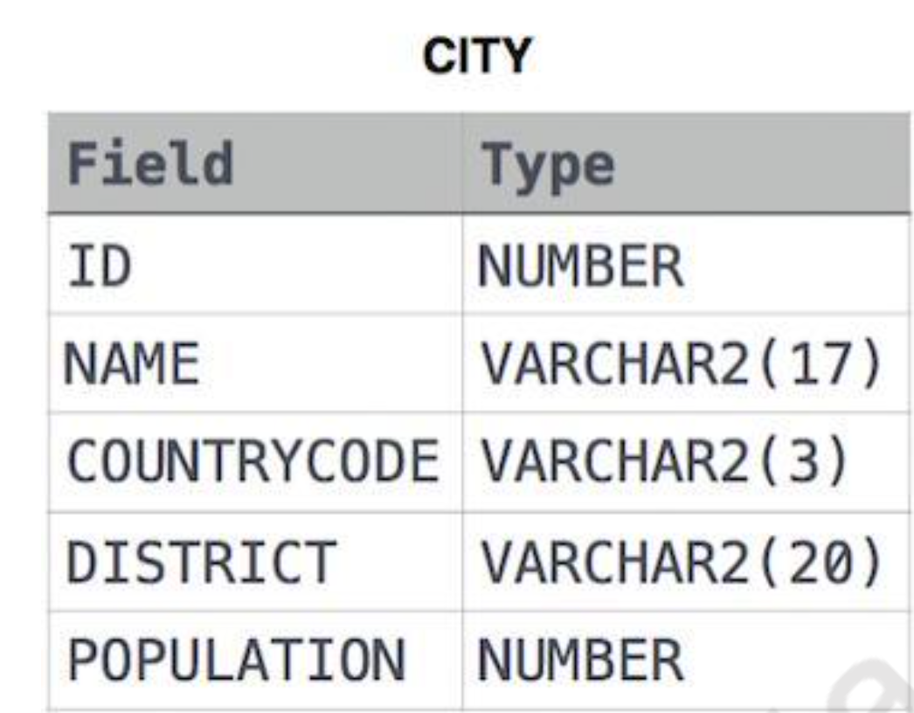
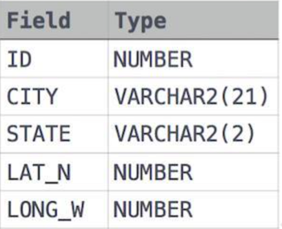

Assignment 1
SQL Assignment1¶
Q1. Query all columns for all American cities in the CITY table with populations larger than 100000. The CountryCode for America is USA. The CITY table is described as follows:

Answer
Creating the CITY Table¶
CREATE TABLE CITY
(
ID INT,
NAME VARCHAR(17),
COUNTRYCODE VARCHAR(3),
DISTRICT VARCHAR(20),
POPULATION INT
);
This SQL command creates a table named CITY with columns ID (integer), NAME (varchar with a maximum length of 17 characters), COUNTRYCODE (varchar with a maximum length of 3 characters), DISTRICT (varchar with a maximum length of 20 characters), and POPULATION (integer).
Describing the CITY Table¶
This command is used to display information about the structure of the CITY table, including the column names, data types, and any constraints.
Inserting Data into the CITY Table¶
INSERT INTO CITY VALUES
(6, 'Rotterdam', 'NLD', 'Zuid-Holland', 593321),
(3878, 'Scottsdale', 'USA', 'Arizona', 202705),
-- (and additional rows)
;
These commands insert data into the CITY table, providing values for the ID, NAME, COUNTRYCODE, DISTRICT, and POPULATION columns for each row.
Selecting All Rows from the CITY Table¶
This command retrieves all rows from the CITY table, displaying the values in all columns for each row.
Filtering Rows Based on Conditions¶
SELECT ID, NAME, COUNTRYCODE, DISTRICT, POPULATION
FROM CITY
WHERE COUNTRYCODE = 'USA' AND POPULATION > 100000;
This query selects specific columns from the CITY table for rows where the COUNTRYCODE is 'USA' and the POPULATION is greater than 100,000.
Alternative Query with Asterisk¶
This is an equivalent query to the previous one, but it selects all columns using the asterisk (*) wildcard.
Q2.Query the NAME field for all American cities in the CITY table with populations larger than 120000. The CountryCode for America is USA. The CITY table is described as follows:
Answer
SELECT NAME FROM CITY WHERE COUNTRYCODE = 'USA' AND POPULATION > 120000;
Q3. Query all columns (attributes) for every row in the CITY table. The CITY table is described as follows:
Answer
select * from CITY;
Q4. Query all columns for a city in CITY with the ID 1661.
Answer
select * from CITY where ID = 1661;
Q5. Query all attributes of every Japanese city in the CITY table. The COUNTRYCODE for Japan is JPN.
Answer
SELECT * FROM CITY WHERE COUNTRYCODE = 'JPN';
Q6. Query the names of all the Japanese cities in the CITY table. The COUNTRYCODE for Japan is JPN.
Answer
SELECT NAME FROM CITY WHERE COUNTRYCODE = 'JPN';
Q7. Query a list of CITY and STATE from the STATION table. The STATION table is described as follows:

where LAT_N is the northern latitude and LONG_W is the western longitude.
Answer
Certainly! Here's an explanation of the provided SQL commands in Markdown format:
Creating the STATION Table¶
CREATE TABLE IF NOT EXISTS STATION
(
ID INT,
CITY VARCHAR(21),
STATE VARCHAR(2),
LAT_N INT,
LONG_W INT
);
This SQL command creates a table named STATION with columns ID (integer), CITY (varchar with a maximum length of 21 characters), STATE (varchar with a maximum length of 2 characters), LAT_N (integer), and LONG_W (integer). The "IF NOT EXISTS" clause ensures that the table is created only if it does not already exist.
Describing the STATION Table¶
This command is used to display information about the structure of the STATION table, including the column names, data types, and any constraints.
Inserting Data into the STATION Table¶
-- (Multiple INSERT statements with data)
INSERT INTO STATION VALUES
(794, 'Kissee Mills', 'MO', 139, 73),
(824, 'Loma Mar', 'CA', 48, 130),
-- (and additional rows)
;
These commands insert data into the STATION table, providing values for the ID, CITY, STATE, LAT_N, and LONG_W columns for each row.
Selecting All Rows from the STATION Table¶
This command retrieves all rows from the STATION table, displaying the values in all columns for each row.
Selecting Specific Columns from the STATION Table¶
This query selects specific columns (CITY and STATE) from the STATION table for all rows. It retrieves only the specified columns, providing a focused view of the data.
Q8. Query a list of CITY names from STATION for cities that have an even ID number. Print the results in any order, but exclude duplicates from the answer.
Answer
Selecting Distinct City Names from STATION Table¶
This SQL query performs the following operations:
-
SELECT DISTINCT(CITY) AS City_Name: It selects unique city names from the STATION table. The use of DISTINCT ensures that duplicate city names are excluded. The
AS City_Namealias is used to rename the result column to "City_Name." -
FROM STATION: Specifies the source table as STATION from which to retrieve the data.
-
WHERE ID % 2 = 0: Filters the rows based on the condition that the ID column is even (divisible by 2). This means only rows with even ID values are included in the result set.
-
ORDER BY CITY ASC: Orders the result set in ascending order based on the CITY column. The
ASCkeyword is optional, as sorting is ascending by default.
Explanation:¶
-
SELECT DISTINCT(CITY) AS City_Name: This part of the query is responsible for selecting unique city names from the STATION table.
-
FROM STATION: Specifies the table from which the data is being retrieved, which is the STATION table in this case.
-
WHERE ID % 2 = 0: The WHERE clause filters the rows based on the condition that the ID column is even, ensuring that only rows with even ID values are considered.
-
ORDER BY CITY ASC: Orders the result set in ascending order based on the CITY column. The result will be a list of distinct city names with even ID values, sorted alphabetically.
Q9. Find the difference between the total number of CITY entries in the table and the number of distinct CITY entries in the table. where LAT_N is the northern latitude and LONG_W is the western longitude. For example, if there are three records in the table with CITY values 'New York', 'New York', 'Bengalaru', there are 2 different city names: 'New York' and 'Bengalaru'. The query returns , because total number of records - number of unique city names = 3-2 =1
Answer
## Explanation of SQL Query
### Objective
The SQL query aims to retrieve information about the `CITY` column in the `STATION` table, including the total number of records, the number of unique city names, and the difference between the total count and the count of distinct city names.
### SQL Query
```sql
SELECT
COUNT(CITY) AS TOTAL_NUMBER_OF_RECORDS,
COUNT(DISTINCT(CITY)) AS NUMBER_OF_UNIQUE_CITY_NAMES,
(COUNT(CITY) - COUNT(DISTINCT(CITY))) AS DIFFERENCE_CITY_COUNT
FROM
STATION;
Explanation¶
COUNT(CITY) AS TOTAL_NUMBER_OF_RECORDS:- This part of the query calculates the total number of records in the
STATIONtable by counting the occurrences of values in theCITYcolumn. -
The result is aliased as
TOTAL_NUMBER_OF_RECORDSfor better readability. -
COUNT(DISTINCT(CITY)) AS NUMBER_OF_UNIQUE_CITY_NAMES:- This part of the query calculates the count of distinct (unique) values in the
CITYcolumn. - It provides the number of unique city names in the
STATIONtable. - The result is aliased as
NUMBER_OF_UNIQUE_CITY_NAMES.
- This part of the query calculates the count of distinct (unique) values in the
-
(COUNT(CITY) - COUNT(DISTINCT(CITY))) AS DIFFERENCE_CITY_COUNT:- This part of the query calculates the difference between the total count of city names and the count of distinct city names.
- It gives the count of non-unique (duplicate) city names in the
STATIONtable. - The result is aliased as
DIFFERENCE_CITY_COUNT.
Result¶
The final result of the query will provide a single row with three columns:
- TOTAL_NUMBER_OF_RECORDS: Total count of records in the STATION table.
- NUMBER_OF_UNIQUE_CITY_NAMES: Count of unique city names in the STATION table.
- DIFFERENCE_CITY_COUNT: The difference between the total count and the count of distinct city names, indicating the number of duplicate city names in the STATION table.
```
--Q10. Query the two cities in STATION with the shortest and longest CITY names, as well as their respective lengths (i.e.: number of characters in the name). If there is more than one smallest or largest city, choose the one that comes first when ordered alphabetically. --Sample Input --For example, CITY has four entries: DEF, ABC, PQRS and WXY. --Sample Output --ABC 3 --PQRS 4 --Hint - --When ordered alphabetically, the CITY names are listed as ABC, DEF, PQRS, and WXY, with lengths and. The longest name is PQRS, but there are options for shortest named city. Choose ABC, because it comes first alphabetically. --Note --You can write two separate queries to get the desired output. It need not be a single query.
Answer
## Explanation of SQL Queries
### Query 1
```sql
SELECT CITY, LENGTH(CITY) AS MIN_LENGTH_OF_CITY
FROM STATION
ORDER BY LENGTH(CITY) ASC
LIMIT 1;
Objective¶
The first query aims to retrieve the city with the minimum length (number of characters) from the CITY column in the STATION table.
Explanation¶
SELECT CITY, LENGTH(CITY) AS MIN_LENGTH_OF_CITY:- The query selects the
CITYcolumn and calculates the length of each city name usingLENGTH(CITY). -
The result is aliased as
MIN_LENGTH_OF_CITYfor better readability. -
FROM STATION:- Specifies that the data is to be retrieved from the
STATIONtable.
- Specifies that the data is to be retrieved from the
-
ORDER BY LENGTH(CITY) ASC:- Orders the result set in ascending order based on the length of the city names.
- This ensures that the city with the minimum length comes first in the result set.
-
LIMIT 1:- Limits the result set to only one row, effectively retrieving the city with the minimum length.
Query 2¶
Objective¶
The second query aims to retrieve the city with the maximum length (number of characters) from the CITY column in the STATION table.
Explanation¶
SELECT CITY, LENGTH(CITY) AS MAX_LENGTH_OF_CITY:- Similar to the first query, this selects the
CITYcolumn and calculates the length of each city name. -
The result is aliased as
MAX_LENGTH_OF_CITY. -
FROM STATION:- Specifies that the data is to be retrieved from the
STATIONtable.
- Specifies that the data is to be retrieved from the
-
ORDER BY LENGTH(CITY) DESC:- Orders the result set in descending order based on the length of the city names.
- This ensures that the city with the maximum length comes first in the result set.
-
LIMIT 1:- Limits the result set to only one row, effectively retrieving the city with the maximum length.
Result¶
The result of each query will be a single row containing the city name and its corresponding length. The first query provides the city with the minimum length, and the second query provides the city with the maximum length. ```
Q11. Query the list of CITY names starting with vowels (i.e., a, e, i, o, or u) from STATION. Your result cannot contain duplicates.
Answer
```sql
SELECT DISTINCT CITY
FROM STATION
WHERE LOWER(CITY) LIKE 'a%'
OR LOWER(CITY) LIKE 'e%'
OR LOWER(CITY) LIKE 'i%'
OR LOWER(CITY) LIKE 'o%'
OR LOWER(CITY) LIKE 'u%'
ORDER BY CITY;
Objective¶
The SQL query aims to retrieve distinct city names from the CITY column in the STATION table where the city name starts with a vowel (either 'a', 'e', 'i', 'o', or 'u'). The result is ordered alphabetically by city name.
Explanation¶
SELECT DISTINCT CITY:-
This part of the query selects distinct city names from the
CITYcolumn. -
FROM STATION:- Specifies that the data is to be retrieved from the
STATIONtable.
- Specifies that the data is to be retrieved from the
-
WHERE LOWER(CITY) LIKE 'a%' OR LOWER(CITY) LIKE 'e%' OR LOWER(CITY) LIKE 'i%' OR LOWER(CITY) LIKE 'o%' OR LOWER(CITY) LIKE 'u%':- The
WHEREclause filters the results based on the condition that the lowercase version of the city name (LOWER(CITY)) should start with any of the vowels ('a', 'e', 'i', 'o', or 'u'). LIKE 'a%'checks for city names starting with 'a', and similarly for other vowels.- The
LOWER()function is used to ensure case-insensitive comparison.
- The
-
ORDER BY CITY:- Orders the result set alphabetically by the city names.
Result¶
The result of the query will be a list of distinct city names from the STATION table where each city name starts with a vowel. The list is ordered alphabetically by city name.
Q12. Query the list of CITY names ending with vowels (a, e, i, o, u) from STATION. Your result cannot contain duplicates. Certainly! Here's the explanation of the provided SQL query in Markdown format:
Answer
## Explanation of SQL Query
```sql
SELECT DISTINCT CITY
FROM STATION
WHERE LOWER(CITY) LIKE '%a'
OR LOWER(CITY) LIKE '%e'
OR LOWER(CITY) LIKE '%i'
OR LOWER(CITY) LIKE '%o'
OR LOWER(CITY) LIKE '%u'
ORDER BY CITY;
Objective¶
The SQL query aims to retrieve distinct city names from the CITY column in the STATION table where the city name ends with a vowel ('a', 'e', 'i', 'o', or 'u'). The result is ordered alphabetically by city name.
Explanation¶
SELECT DISTINCT CITY:-
This part of the query selects distinct city names from the
CITYcolumn. -
FROM STATION:- Specifies that the data is to be retrieved from the
STATIONtable.
- Specifies that the data is to be retrieved from the
-
WHERE LOWER(CITY) LIKE '%a' OR LOWER(CITY) LIKE '%e' OR LOWER(CITY) LIKE '%i' OR LOWER(CITY) LIKE '%o' OR LOWER(CITY) LIKE '%u':- The
WHEREclause filters the results based on the condition that the lowercase version of the city name (LOWER(CITY)) should end with any of the vowels ('a', 'e', 'i', 'o', or 'u'). LIKE '%a'checks for city names ending with 'a', and similarly for other vowels.- The
%symbol is a wildcard character that represents zero or more characters.
- The
-
ORDER BY CITY:- Orders the result set alphabetically by the city names.
Result¶
The result of the query will be a list of distinct city names from the STATION table where each city name ends with a vowel. The list is ordered alphabetically by city name.
This query is useful for obtaining a subset of city names that meet the specified criteria, providing a result set containing only distinct city names that end with a vowel.
```markdown
## Explanation of SQL Query
```sql
SELECT DISTINCT CITY
FROM STATION
WHERE LOWER(CITY) LIKE '%a'
OR LOWER(CITY) LIKE '%e'
OR LOWER(CITY) LIKE '%i'
OR LOWER(CITY) LIKE '%o'
OR LOWER(CITY) LIKE '%u'
ORDER BY CITY;
```
### Objective
The SQL query aims to retrieve distinct city names from the `CITY` column in the `STATION` table where the city name ends with a vowel ('a', 'e', 'i', 'o', or 'u'). The result is ordered alphabetically by city name.
### Explanation
1. **`SELECT DISTINCT CITY`**:
- This part of the query selects distinct city names from the `CITY` column.
2. **`FROM STATION`**:
- Specifies that the data is to be retrieved from the `STATION` table.
3. **`WHERE LOWER(CITY) LIKE '%a' OR LOWER(CITY) LIKE '%e' OR LOWER(CITY) LIKE '%i' OR LOWER(CITY) LIKE '%o' OR LOWER(CITY) LIKE '%u'`**:
- The `WHERE` clause filters the results based on the condition that the lowercase version of the city name (`LOWER(CITY)`) should end with any of the vowels ('a', 'e', 'i', 'o', or 'u').
- `LIKE '%a'` checks for city names ending with 'a', and similarly for other vowels.
- The `%` symbol is a wildcard character that represents zero or more characters.
4. **`ORDER BY CITY`**:
- Orders the result set alphabetically by the city names.
### Result
The result of the query will be a list of distinct city names from the `STATION` table where each city name ends with a vowel. The list is ordered alphabetically by city name.
Q13. Query the list of CITY names from STATION that do not start with vowels. Your result cannot contain duplicates.
Answer
```sql
SELECT DISTINCT CITY
FROM STATION
WHERE LOWER(CITY) NOT LIKE 'a%'
AND LOWER(CITY) NOT LIKE 'e%'
AND LOWER(CITY) NOT LIKE 'i%'
AND LOWER(CITY) NOT LIKE 'o%'
AND LOWER(CITY) NOT LIKE 'u%'
ORDER BY CITY;
Objective¶
The SQL query aims to retrieve distinct city names from the CITY column in the STATION table where the city name does not start with any vowel ('a', 'e', 'i', 'o', or 'u'). The result is ordered alphabetically by city name.
Explanation¶
SELECT DISTINCT CITY:-
This part of the query selects distinct city names from the
CITYcolumn. -
FROM STATION:- Specifies that the data is to be retrieved from the
STATIONtable.
- Specifies that the data is to be retrieved from the
-
WHERE LOWER(CITY) NOT LIKE 'a%' AND LOWER(CITY) NOT LIKE 'e%' AND LOWER(CITY) NOT LIKE 'i%' AND LOWER(CITY) NOT LIKE 'o%' AND LOWER(CITY) NOT LIKE 'u%':- The
WHEREclause filters the results based on the condition that the lowercase version of the city name (LOWER(CITY)) should not start with any of the vowels ('a', 'e', 'i', 'o', or 'u'). NOT LIKE 'a%'ensures that city names do not start with 'a', and similarly for other vowels.
- The
-
ORDER BY CITY:- Orders the result set alphabetically by the city names.
Result¶
The result of the query will be a list of distinct city names from the STATION table where each city name does not start with any vowel. The list is ordered alphabetically by city name.
This query is useful for obtaining a subset of city names that meet the specified criteria, providing a result set containing only distinct city names that do not start with a vowel.
Q14.Query the list of CITY names from STATION that do not end with vowels. Your result cannot contain duplicates.
Answer
```markdown
## Explanation of SQL Query
```sql
SELECT DISTINCT CITY
FROM STATION
WHERE LOWER(CITY) NOT LIKE '%a'
AND LOWER(CITY) NOT LIKE '%e'
AND LOWER(CITY) NOT LIKE '%i'
AND LOWER(CITY) NOT LIKE '%o'
AND LOWER(CITY) NOT LIKE '%u'
ORDER BY CITY;
```
Objective¶
The SQL query aims to retrieve distinct city names from the CITY column in the STATION table where the city name does not contain any vowel ('a', 'e', 'i', 'o', or 'u') in any position. The result is ordered alphabetically by city name.
Explanation¶
SELECT DISTINCT CITY:-
This part of the query selects distinct city names from the
CITYcolumn. -
FROM STATION:- Specifies that the data is to be retrieved from the
STATIONtable.
- Specifies that the data is to be retrieved from the
-
WHERE LOWER(CITY) NOT LIKE '%a' AND LOWER(CITY) NOT LIKE '%e' AND LOWER(CITY) NOT LIKE '%i' AND LOWER(CITY) NOT LIKE '%o' AND LOWER(CITY) NOT LIKE '%u':- The
WHEREclause filters the results based on the condition that the lowercase version of the city name (LOWER(CITY)) should not contain any of the vowels ('a', 'e', 'i', 'o', or 'u') in any position. NOT LIKE '%a'ensures that city names do not contain 'a' in any position, and similarly for other vowels.
- The
-
ORDER BY CITY:- Orders the result set alphabetically by the city names.
Result¶
The result of the query will be a list of distinct city names from the STATION table where each city name does not contain any vowel in any position. The list is ordered alphabetically by city name.
This query is useful for obtaining a subset of city names that meet the specified criteria, providing a result set containing only distinct city names that do not contain any vowel.
Q15. Query the list of CITY names from STATION that either do not start with vowels or do not end with vowels. Your result cannot contain duplicates.
Answer
```markdown
## Explanation of SQL Query
```sql
SELECT DISTINCT CITY
FROM STATION
WHERE CITY NOT REGEXP '^[aeiou]' OR CITY NOT REGEXP '[aeiou]$';
```
### Objective
The SQL query aims to retrieve distinct city names from the `CITY` column in the `STATION` table where the city name does not start with a vowel ('a', 'e', 'i', 'o', or 'u') or end with a vowel. The result set only includes city names that satisfy either of these conditions.
### Explanation
1. **`SELECT DISTINCT CITY`**:
- This part of the query selects distinct city names from the `CITY` column.
2. **`FROM STATION`**:
- Specifies that the data is to be retrieved from the `STATION` table.
3. **`WHERE CITY NOT REGEXP '^[aeiou]' OR CITY NOT REGEXP '[aeiou]$'`**:
- The `WHERE` clause filters the results based on the condition that the city name should not match the regular expression patterns.
- `'^[aeiou]'` checks if the city name does not start with a vowel.
- `'[aeiou]$'` checks if the city name does not end with a vowel.
- The `OR` operator allows the inclusion of city names that satisfy either of these conditions.
### Result
The result of the query will be a list of distinct city names from the `STATION` table where each city name does not start with a vowel or does not end with a vowel. This provides a subset of city names that meet the specified criteria.
This query is useful for obtaining a result set containing only distinct city names that do not start or end with a vowel.